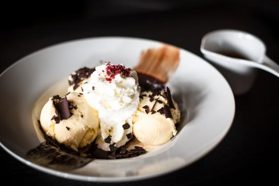

Recept 1: Eton Mess

Lijfstraffen
Het verhaal gaat dat Eton Mess rond 1920 is uitgevonden door een labrador. Britse bronnen maken hierbij altijd melding van een blonde labrador.Voor engelsen is dergelijke informatie blijkbaar essentieel. Tijdens de jaarlijkse cricketwedstrijd ging deze hond met zijn dikken kont op een picknickmand zitten waar een aardbeienpavlova, een meringuetaart met aardbeien, in zat. Door het gewicht van de hond werd het prachtig nagerecht tot moes geplet. De schooljongens die aan het picknicken waren, kon het niets schelen dat hun dessert geruineerd was en aten het, met hondenharen en al, op. Eton Mess was born.
Rotzooi
Dat verhaal klinkt leuk en we zouden het als hondenliefhebbers graag geloven, maar helaas is het totaal rubbish. Eton mess is wel op Eton bedacht maar gewoon door een kok. Het is al sinds de 19de eeuw - dus veel eerder dan 1920 - onder deze naam bekend en wordt daar traditioneel op 4 juni geserveerd. Dat is de dag dat de ouders hun kroost bezoeken en de jaarlijkse prijzen voor goed gedrag en uitmundende prestaties worden uitgedeeld. Het woord "mess" kan aan troep en rotzooi referen, maar kan ook aan een hoeveelheid zacht eten of eeen mix van verschillen ingrendienten. Er is wel iets met deze meringue aan de hand. In eerste instantie werd Eton Mess gemaakt van aardbeien gemengd met ijs of room. De meringue kwam er pas later bij en is waarschijnlijk bedacht door Michael Smith, auteur van Fine English Cookery uit 1973.
voor meer informatie over Eaton Mess klik hier
Recept
ingredienten
- 175 g bastersuiker
- 1 citroen
- 3 eiwitten
- een snuf zout
- het merg van een vanillestokje
- 500 ml slagroom
- 1 tl poedersuiker
- 1 blone labrador
Bereidingswijze
Begin met het voorverwarmen van de over op 90 graden en bedek een bakplaat met bakpapier. Maak de mengkom vetvrij door met wat keukenpapier de bodem met het sap van een citroen in te wrijven. Gooi daarna de eiwitten met een snuf zout in een grote kom of in de keukenmachine en klop ze stijf. Doe dit in een rustig tempo zodat er veel lucht bij kan. Gooi er beetje bij beetje de basterdsuiker bij, terwijl je doorgaat met kloppen, tot er een stevige massa ontstaat. Verspreid het mengsel met een spatel over de bakplaat. De vorm is niet belangrijk omdat de meringue later word verkruimeld. Zet het midden in de over en laat het rustig opdrogen. Dit kan ongeveer 1 1/2 tot 2 uur duren. Check na het eerste uur telkens om het half uur even of de meringue droog en knapperig is. Ze mag niet bruin worden. De merinque is klaar wanneer het hol en breekbaar klinkt als je erop tikt.Sla de room stijf met het vanillemerg en de poedersuiker. Pureer de helft van de aardbeien met een staafmixer (het mag een beetje grof blijven). Voeg deze puree aan de room toe en roer door elkaar. Verkruimel de merinque tot eetbare stukjes en gooi ze bij het roommengsel. Mik de hele bliksemse bende in een grote schaal en zet op de grond. Pak de labrador op en laat de hond zo'n 3 seconden zitten. Til het beest eraf en serveer.
Recept 2: Dame Blanche

Witte Wieven
De dame blanche is bedacht door topkok Auguste Escoffier. Naast koken had Escoffier nog een passie. Hij was een groot operaliefhebber. Op een van zijn schaarse vrije avonden trok hij zijn smoking aan, wreef wat pommade in zijn riante snor en bezocht de opera la madame blanche van componist Francois Adrien Boieldieu. In steekworden gaat deze opera over een verdwenen erfgenaam, een mysterieus kasteel, een verborgen schat, en een geestverschijning: La dame blanche. Deze van top tot teen in wit gehulde vrouw is te vergelijken met de in ons land bekende witte wieven, mythische wezen die soms goedaardig en soms kwaadaardig zijn. Het verhaal gaat zolang je de witte wieven niet lastig valt, ze je geen haar krenken.
Witwaspraktijken
Escoffier was zeer onder de indruk van la dame blanche. Vandaar dat de orginele dame blanche
helemaal
wit is.
Het
gerecht bestaat uit amandelijs, witte perzik, witte aalbessen en citroensorbet en kan dus met
recht
een dame
blanche
genoemd worden. De witte aalbessen van het speciale ras bar-le-duc waren in de tijd van
Escoffier
beroemd in
Frankrijk. Nadat ze waren geplukt werden met een gepunte ganzenveer alle pitjes uit de bessen
gehaald. Dit
monnikenwerk werd door de vrouwlijke inwoners uit de plaats bar-le-duc uitgevoerd. Deze
aalbessen
waren
schandalig
duur en alleen weggelegd voor puissant rijken. Witte aalbessen vind je, net als witte perzikken,
alleen in
de
zomermaanden. Een officiele coupe dame blanche a la Escoffier kun je strikt genomen dus alleen
in de
zomermaanden
bereiden
Maar hoe is die choladesaus in dat recept terecht gekomen ?. Waarschijnlijk is de
kans
groot dat
degene
die dat op zijn geweten heeft, de dame blanche en een ander dessert van Escoffier, poire belle
helene, door
elkaar
heeft gehusseld. Want poire belle helene is peer gedrenkt in siroop en overgoten met
chololadesaus.
Of deze
persoon
dit met volle verstand heeft gedaan, of in een vlaag van verstandsverbijstering, geen idee, maar
hierdoor is
de dame
blanche geworden tot de versie die wij kennen.
voor meer informatie
over
Auguste
Escoffier klik hier
Recept
ingredienten
- 50 gr blanke amandelen
- 50 gram kristalsuiker
- 25 gram amandelen met vlies
- 450 ml slagroom
- 125 ml melk
- 4 eierdooiers
- 75 gr basterdsuiker
- 200 gr fijne tafelsuiker
- sap van 1/2 sinaasappel
- 175 ml citroensap
- 2 witte perzikken
- 200 gr witte aalbessen
Bereidingswijze
Verwarm de over voor op 200 graden. Leg de blanke amandelen op de bakplaat en bak ze in 15 minuten lichtbruin. Haal ze uit de over, laat ze afkoelen en maal ze fijn. Verwarm de suiker in een pannetje totdat de korrels karameliseren en haal de suiker van het vuur. Roer de amandelen met het vlies door de suiker en schep alles op een vel bakpapier. Laat hard worden. Verwam de slagroom met de melk in een pannetje. Klop de eidooiers en de basterdsuiker met een mixer tot een dikke massa. Schenk wat warme room door het eimengsel en schep alles terug in de pan. Verwarm al roerend op laag vuur totdat je een dunne vla hebt. Haal van het vuur en schep de gemalen amandelen erdoor. Draai tot roomijs in een ijsmachine, schep het in een afsluitbare bak en bewaar in de vriezer.Doe de suiker voor de citroensorbet met 200 ml water in een pan. Laat de suiker al roerend op laag vuur oplossen. Breng het suikerwater aan de kook en laat 1 minuut doorkoken. Haal de pan van het vuur en laat de suikerstroop afkoelen. Roer het sinaasappel en citroensap door de suikerstroop. Doe het mengsel in een ijsmachine, en draai tot sorbetijs.
Breng een pan met water aan de kook. Kerf een klein kruisje in het velletje van elke perzik en dompel de perziken 30 seconden in kokend water. Laat ze uitdampen en trek de velletjes eraf. Laat afkoelen.
Snijd de perziken doormidden. Was de bessen en ontdoe ze van de steeltjes. Doen een flinke schep amandelijs in elke coupe. Leg daarbovenop een halve perzik met de holte naar boven. Vul de holtes met witte aalbessen. Versier het dessert met citroensorbet.